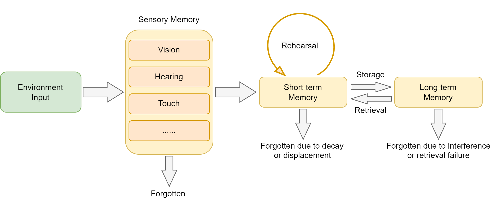
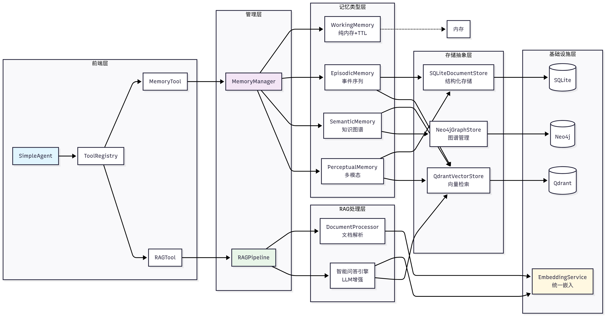
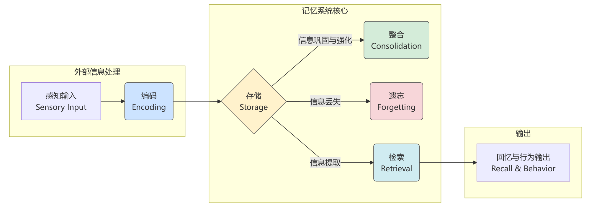
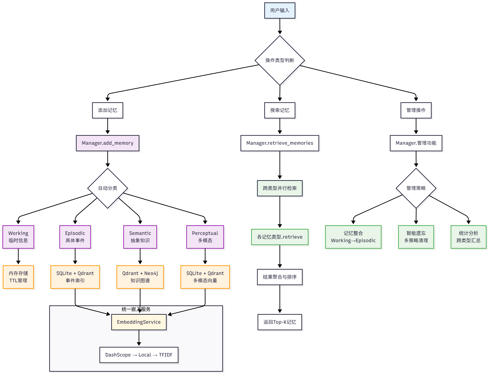
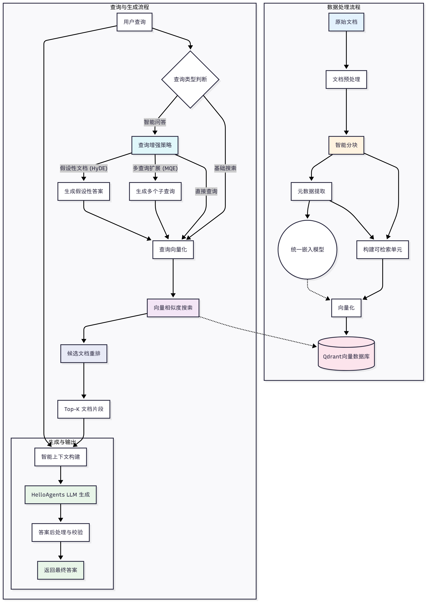
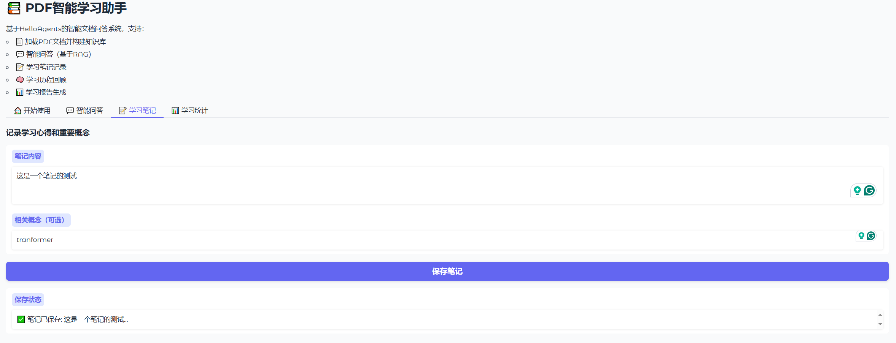
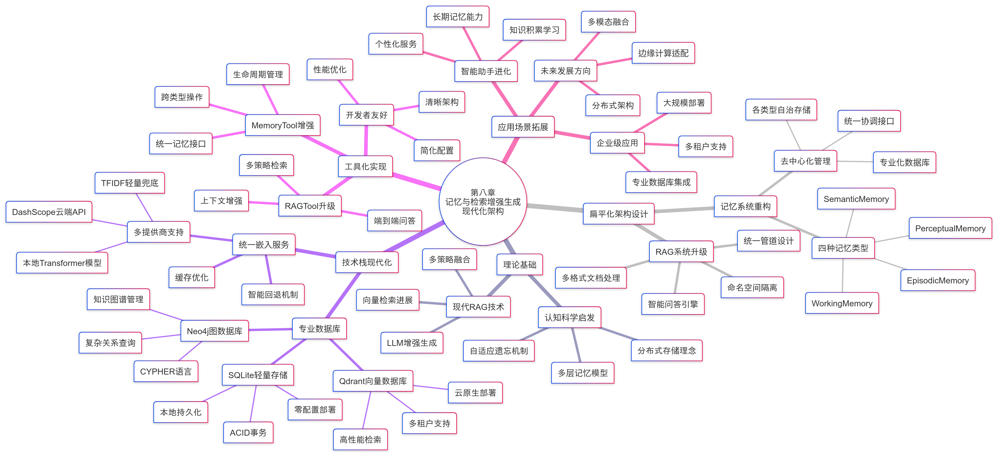

Chapter 8 Memory and Retrieval¶
In previous chapters, we built the basic architecture of the HelloAgents framework, implementing various agent paradigms and tool systems. However, our framework still lacks a critical capability: memory. If an agent cannot remember previous interactions or learn from historical experiences, its performance will be greatly limited in continuous conversations or complex tasks.
This chapter will add two core capabilities to HelloAgents based on the framework built in Chapter 7: Memory System and Retrieval-Augmented Generation (RAG). We will adopt a "framework extension + knowledge popularization" approach, deeply understanding the theoretical foundations of Memory and RAG during the construction process, and ultimately implementing an agent system with complete memory and knowledge retrieval capabilities.
8.1 From Cognitive Science to Agent Memory¶
8.1.1 Inspiration from Human Memory Systems¶
Before building an agent's memory system, let's first understand from a cognitive science perspective how humans process and store information. Human memory is a multi-level cognitive system that not only stores information but also classifies and organizes information based on importance, time, and context. Cognitive psychology provides a classic theoretical framework for understanding the structure and processes of memory[1], as shown in Figure 8.1.

Figure 8.1 Hierarchical Structure of Human Memory System
According to cognitive psychology research, human memory can be divided into the following levels:
- Sensory Memory: Very short duration (0.5-3 seconds), huge capacity, responsible for temporarily storing all information received by the senses
- Working Memory: Short duration (15-30 seconds), limited capacity (7±2 items), responsible for information processing in current tasks
- Long-term Memory: Long duration (can last a lifetime), almost unlimited capacity, further divided into:
- Procedural Memory: Skills and habits (such as riding a bicycle)
- Declarative Memory: Knowledge that can be expressed in language, further divided into:
- Semantic Memory: General knowledge and concepts (such as "Paris is the capital of France")
- Episodic Memory: Personal experiences and events (such as "yesterday's meeting content")
8.1.2 Why Agents Need Memory and RAG¶
Drawing on the design of human memory systems, we can understand why agents also need similar memory capabilities. An important characteristic of human intelligence is the ability to remember past experiences, learn from them, and apply these experiences to new situations. Similarly, a truly intelligent agent also needs memory capabilities. For LLM-based agents, they typically face two fundamental limitations: forgetting of conversation state and limitations of built-in knowledge.
(1) Limitation 1: Conversation Forgetting Due to Statelessness
Current large language models, although powerful, are designed to be stateless. This means that each user request (or API call) is an independent, unrelated computation. The model itself does not automatically "remember" the content of the previous conversation. This brings several problems:
- Context Loss: In long conversations, important early information may be lost due to context window limitations
- Lack of Personalization: The agent cannot remember user preferences, habits, or specific needs
- Limited Learning Ability: Cannot learn and improve from past successes or failures
- Consistency Issues: May provide contradictory answers in multi-turn conversations
Let's understand this problem through a specific example:
# How to use Agent from Chapter 7
from hello_agents import SimpleAgent, HelloAgentsLLM
agent = SimpleAgent(name="Learning Assistant", llm=HelloAgentsLLM())
# First conversation
response1 = agent.run("My name is Zhang San, I'm learning Python and have mastered basic syntax")
print(response1) # "Great! Python basic syntax is an important foundation for programming..."
# Second conversation (new session, such as after restarting the program and creating a new Agent)
agent = SimpleAgent(name="Learning Assistant", llm=HelloAgentsLLM())
response2 = agent.run("Do you remember my learning progress?")
print(response2) # "Sorry, I don't know your learning progress..."
Note that the SimpleAgent from Chapter 7 temporarily stores the current dialogue in _history within the same instance, so consecutive turns in the same process and instance can carry recent context. However, this history is only a temporary message list. It is not persisted across sessions and does not support long-term retrieval, forgetting, or consolidation.
To solve this problem, our framework needs to introduce a memory system.
(2) Limitation 2: Limitations of Model's Built-in Knowledge
Besides forgetting conversation history, another core limitation of LLMs is that their knowledge is static and limited. This knowledge comes entirely from their training data, bringing a series of problems:
- Knowledge Timeliness: Large models have a training data cutoff date and cannot access the latest information
- Domain-Specific Knowledge: General models may lack sufficient depth in specific domains
- Factual Accuracy: Reduce model hallucinations through retrieval verification
- Explainability: Provide information sources to enhance answer credibility
To overcome this limitation, RAG technology emerged. Its core idea is to retrieve the most relevant information from an external knowledge base (such as documents, databases, APIs) before the model generates an answer, and provide this information as context to the model.
8.1.3 Memory and RAG System Architecture Design¶
Based on the framework foundation established in Chapter 7 and inspiration from cognitive science, we designed a layered memory and RAG system architecture, as shown in Figure 8.2. This architecture not only draws on the hierarchical structure of human memory systems but also fully considers the scalability of engineering implementation. In implementation, we design memory and RAG as two independent tools: memory_tool is responsible for storing and maintaining interaction information during conversations, while rag_tool is responsible for retrieving relevant information from user-provided knowledge bases as context and can automatically store important retrieval results in the memory system.

Figure 8.2 Overall Architecture of HelloAgents Memory and RAG System
The memory system adopts a four-layer architecture design:
HelloAgents Memory System
├── Infrastructure Layer
│ ├── MemoryManager - Memory manager (unified scheduling and coordination)
│ ├── MemoryItem - Memory data structure (standardized memory items)
│ ├── MemoryConfig - Configuration management (system parameter settings)
│ └── BaseMemory - Memory base class (common interface definition)
├── Memory Types Layer
│ ├── WorkingMemory - Working memory (temporary information, TTL management)
│ ├── EpisodicMemory - Episodic memory (specific events, time series)
│ ├── SemanticMemory - Semantic memory (abstract knowledge, graph relationships)
│ └── PerceptualMemory - Perceptual memory (multimodal data)
├── Storage Backend Layer
│ ├── QdrantVectorStore - Vector storage (high-performance semantic retrieval)
│ ├── Neo4jGraphStore - Graph storage (knowledge graph management)
│ └── SQLiteDocumentStore - Document storage (structured persistence)
└── Embedding Service Layer
├── DashScopeEmbedding - Tongyi Qianwen embedding (cloud API)
├── LocalTransformerEmbedding - Local embedding (offline deployment)
└── TFIDFEmbedding - TFIDF embedding (lightweight fallback)
The RAG system focuses on acquiring and utilizing external knowledge:
HelloAgents RAG System
├── Document Processing Layer
│ ├── DocumentProcessor - Document processor (multi-format parsing)
│ ├── Document - Document object (metadata management)
│ └── Pipeline - RAG pipeline (end-to-end processing)
├── Embedding Layer
│ └── Unified Embedding Interface - Reuses memory system's embedding service
├── Vector Storage Layer
│ └── QdrantVectorStore - Vector database (namespace isolation)
└── Intelligent Q&A Layer
├── Multi-strategy Retrieval - Vector retrieval + MQE + HyDE
├── Context Construction - Intelligent fragment merging and truncation
└── LLM-Enhanced Generation - Accurate Q&A based on context
8.1.4 Learning Objectives and Quick Experience¶
Let's first look at the core learning content of Chapter 8:
hello-agents/
├── hello_agents/
│ ├── memory/ # Memory system module
│ │ ├── base.py # Basic data structures (MemoryItem, MemoryConfig, BaseMemory)
│ │ ├── manager.py # Memory manager (unified coordination and scheduling)
│ │ ├── embedding.py # Unified embedding service (DashScope/Local/TFIDF)
│ │ ├── types/ # Memory type implementations
│ │ │ ├── working.py # Working memory (TTL management, pure in-memory)
│ │ │ ├── episodic.py # Episodic memory (event sequence, SQLite+Qdrant)
│ │ │ ├── semantic.py # Semantic memory (knowledge graph, Qdrant+Neo4j)
│ │ │ └── perceptual.py # Perceptual memory (multimodal, SQLite+Qdrant)
│ │ ├── storage/ # Storage backend implementations
│ │ │ ├── qdrant_store.py # Qdrant vector storage (high-performance vector retrieval)
│ │ │ ├── neo4j_store.py # Neo4j graph storage (knowledge graph management)
│ │ │ └── document_store.py # SQLite document storage (structured persistence)
│ │ └── rag/ # RAG system
│ │ ├── pipeline.py # RAG pipeline (end-to-end processing)
│ │ └── document.py # Document processor (multi-format parsing)
│ └── tools/builtin/ # Extended built-in tools
│ ├── memory_tool.py # Memory tool (Agent memory capability)
│ └── rag_tool.py # RAG tool (intelligent Q&A capability)
└──
Quick Start: Installing the HelloAgents Framework
To allow readers to quickly experience the complete functionality of this chapter, we provide a directly installable Python package. You can install the version corresponding to this chapter with the following commands:
# If you encounter model unavailability in version 0.2.0, please refer to issue#320 or switch to version 0.2.9 for testing.
pip install "hello-agents[all]==0.2.0"
python -m spacy download zh_core_web_sm
python -m spacy download en_core_web_sm
In addition, you need to configure the graph database, vector database, LLM, and Embedding solution API in .env. In the tutorial, Qdrant is used for the vector database, Neo4J for the graph database, and Bailian platform is preferred for Embedding. If no API is available, you can switch to a local deployment model solution.
# ================================
# Qdrant Vector Database Configuration - Get API key: https://cloud.qdrant.io/
# ================================
# Use Qdrant cloud service (recommended)
QDRANT_URL=https://your-cluster.qdrant.tech:6333
QDRANT_API_KEY=your_qdrant_api_key_here
# Or use local Qdrant (requires Docker)
# QDRANT_URL=http://localhost:6333
# QDRANT_API_KEY=
# Qdrant collection configuration
QDRANT_COLLECTION=hello_agents_vectors
QDRANT_VECTOR_SIZE=384
QDRANT_DISTANCE=cosine
QDRANT_TIMEOUT=30
# ================================
# Neo4j Graph Database Configuration - Get API key: https://neo4j.com/cloud/aura/
# ================================
# Use Neo4j Aura cloud service (recommended)
NEO4J_URI=neo4j+s://your-instance.databases.neo4j.io
NEO4J_USERNAME=neo4j
NEO4J_PASSWORD=your_neo4j_password_here
# Or use local Neo4j (requires Docker)
# NEO4J_URI=bolt://localhost:7687
# NEO4J_USERNAME=neo4j
# NEO4J_PASSWORD=hello-agents-password
# Neo4j connection configuration
NEO4J_DATABASE=neo4j
NEO4J_MAX_CONNECTION_LIFETIME=3600
NEO4J_MAX_CONNECTION_POOL_SIZE=50
NEO4J_CONNECTION_TIMEOUT=60
# ==========================
# Embedding Configuration Example - Get from Alibaba Cloud Console: https://dashscope.aliyun.com/
# ==========================
# - If empty, dashscope defaults to text-embedding-v3; local defaults to sentence-transformers/all-MiniLM-L6-v2
EMBED_MODEL_TYPE=dashscope
EMBED_MODEL_NAME=
EMBED_API_KEY=
EMBED_BASE_URL=
Learning in this chapter can be done in two ways:
- Experiential Learning: Directly install the framework using
pip, run example code, and quickly experience various functions - Deep Learning: Follow the chapter content, implement each component from scratch, and deeply understand the framework's design philosophy and implementation details
We recommend adopting a "experience first, then implement" learning path. In this chapter, we provide complete test files. You can rewrite core functions and run tests to verify whether your implementation is correct.
Following the design principles established in Chapter 7, we encapsulate memory and RAG capabilities as standard tools rather than creating new Agent classes. Before starting, let's spend 30 seconds experiencing building an agent with memory and RAG capabilities using Hello-agents!
# Configure the LLM API in .env in the same folder
from hello_agents import SimpleAgent, HelloAgentsLLM, ToolRegistry
from hello_agents.tools import MemoryTool, RAGTool
# Create LLM instance
llm = HelloAgentsLLM()
# Create Agent
agent = SimpleAgent(
name="Intelligent Assistant",
llm=llm,
system_prompt="You are an AI assistant with memory and knowledge retrieval capabilities"
)
# Create tool registry
tool_registry = ToolRegistry()
# Add memory tool
memory_tool = MemoryTool(user_id="user123")
tool_registry.register_tool(memory_tool)
# Add RAG tool
rag_tool = RAGTool(knowledge_base_path="./knowledge_base")
tool_registry.register_tool(rag_tool)
# Configure tools for Agent
agent.tool_registry = tool_registry
# Start conversation
response = agent.run("Hello! Please remember my name is Zhang San, I am a Python developer")
print(response)
If everything is configured correctly, you can see the following content:
[OK] SQLite database tables and indexes created
[OK] SQLite document storage initialized: ./memory_data\memory.db
INFO:hello_agents.memory.storage.qdrant_store:✅ Successfully connected to Qdrant cloud service: https://0c517275-2ad0-4442-8309-11c36dc7e811.us-east-1-1.aws.cloud.qdrant.io:6333
INFO:hello_agents.memory.storage.qdrant_store:✅ Using existing Qdrant collection: hello_agents_vectors
INFO:hello_agents.memory.types.semantic:✅ Embedding model ready, dimension: 1024
INFO:hello_agents.memory.types.semantic:✅ Qdrant vector database initialization complete
INFO:hello_agents.memory.storage.neo4j_store:✅ Successfully connected to Neo4j cloud service: neo4j+s://851b3a28.databases.neo4j.io
INFO:hello_agents.memory.types.semantic:✅ Neo4j graph database initialization complete
INFO:hello_agents.memory.storage.neo4j_store:✅ Neo4j index creation complete
INFO:hello_agents.memory.types.semantic:✅ Neo4j graph database initialization complete
INFO:hello_agents.memory.types.semantic:🏥 Database health status: Qdrant=✅, Neo4j=✅
INFO:hello_agents.memory.types.semantic:✅ Loaded Chinese spaCy model: zh_core_web_sm
INFO:hello_agents.memory.types.semantic:✅ Loaded English spaCy model: en_core_web_sm
INFO:hello_agents.memory.types.semantic:📚 Available language models: Chinese, English
INFO:hello_agents.memory.types.semantic:Enhanced semantic memory initialization complete (using Qdrant+Neo4j professional databases)
INFO:hello_agents.memory.manager:MemoryManager initialization complete, enabled memory types: ['working', 'episodic', 'semantic']
✅ Tool 'memory' registered.
INFO:hello_agents.memory.storage.qdrant_store:✅ Successfully connected to Qdrant cloud service: https://0c517275-2ad0-4442-8309-11c36dc7e811.us-east-1-1.aws.cloud.qdrant.io:6333
INFO:hello_agents.memory.storage.qdrant_store:✅ Using existing Qdrant collection: rag_knowledge_base
✅ RAG tool initialization successful: namespace=default, collection=rag_knowledge_base
✅ Tool 'rag' registered.
Hello, Zhang San! Nice to meet you. As a Python developer, you must be passionate about programming. If you have any technical questions or need to discuss Python-related topics, feel free to reach out to me anytime. I'll do my best to help you. Is there anything I can help you with right now?
8.2 Memory System: Giving Agents Memory¶
8.2.1 Memory System Workflow¶
Before entering the code implementation phase, we need to first define the workflow of the memory system. This workflow references the memory model in cognitive science and maps each cognitive stage to specific technical components and operations. Understanding this mapping relationship will help us with subsequent code implementation.

Figure 8.3 Cognitive Process of Memory Formation
As shown in Figure 8.3, according to cognitive science research, the formation of human memory goes through the following stages:
- Encoding: Converting perceived information into a storable form
- Storage: Saving encoded information in the memory system
- Retrieval: Extracting relevant information from memory as needed
- Consolidation: Converting short-term memory into long-term memory
- Forgetting: Deleting unimportant or outdated information
Based on this inspiration, we designed a complete memory system for HelloAgents. Its core idea is to mimic how the human brain processes different types of information, dividing memory into multiple specialized modules and establishing an intelligent management mechanism. Figure 8.4 shows in detail the workflow of this system, including key links such as memory addition, retrieval, consolidation, and forgetting.

Figure 8.4 Complete Workflow of HelloAgents Memory System
Our memory system consists of four different types of memory modules, each optimized for specific application scenarios and lifecycles:
First is Working Memory, which plays the role of the agent's "short-term memory," mainly used to store context information of the current conversation. To ensure high-speed access and response, its capacity is intentionally limited (for example, 50 items by default), and its lifecycle is bound to a single session, automatically clearing after the session ends.
Second is Episodic Memory, which is responsible for long-term storage of specific interaction events and the agent's learning experiences. Unlike working memory, episodic memory contains rich contextual information and supports retrospective retrieval by time series or topic, serving as the foundation for the agent to "review" and learn from past experiences.
Corresponding to specific events is Semantic Memory, which stores more abstract knowledge, concepts, and rules. For example, user preferences learned through conversations, instructions that need to be followed long-term, or domain knowledge points are all suitable for storage here. This part of memory has high persistence and importance and is the core for the agent to form a "knowledge system" and perform associative reasoning.
Finally, to interact with increasingly rich multimedia, we introduced Perceptual Memory. This module specifically handles multimodal information such as images and audio and supports cross-modal retrieval. Its lifecycle is dynamically managed based on the importance of information and available storage space.
8.2.2 Quick Experience: Get Started with Memory Features in 30 Seconds¶
Before diving into implementation details, let's quickly experience the basic functions of the memory system:
from hello_agents import SimpleAgent, HelloAgentsLLM, ToolRegistry
from hello_agents.tools import MemoryTool
# Create Agent with memory capability
llm = HelloAgentsLLM()
agent = SimpleAgent(name="Memory Assistant", llm=llm)
# Create memory tool
memory_tool = MemoryTool(user_id="user123")
tool_registry = ToolRegistry()
tool_registry.register_tool(memory_tool)
agent.tool_registry = tool_registry
# Experience memory features
print("=== Adding Multiple Memories ===")
# Add first memory
result1 = memory_tool.execute("add", content="User Zhang San is a Python developer focusing on machine learning and data analysis", memory_type="semantic", importance=0.8)
print(f"Memory 1: {result1}")
# Add second memory
result2 = memory_tool.execute("add", content="Li Si is a frontend engineer skilled in React and Vue.js development", memory_type="semantic", importance=0.7)
print(f"Memory 2: {result2}")
# Add third memory
result3 = memory_tool.execute("add", content="Wang Wu is a product manager responsible for user experience design and requirements analysis", memory_type="semantic", importance=0.6)
print(f"Memory 3: {result3}")
print("\n=== Searching Specific Memories ===")
# Search for frontend-related memories
print("🔍 Searching 'frontend engineer':")
result = memory_tool.execute("search", query="frontend engineer", limit=3)
print(result)
print("\n=== Memory Summary ===")
result = memory_tool.execute("summary")
print(result)
8.2.3 MemoryTool Detailed Explanation¶
Now let's adopt a top-down approach, starting from the specific operations supported by MemoryTool and gradually delving into the underlying implementation. MemoryTool, as the unified interface of the memory system, follows the architectural pattern of "unified entry, distributed processing":
def execute(self, action: str, **kwargs) -> str:
"""Execute memory operation
Supported operations:
- add: Add memory (supports 4 types: working/episodic/semantic/perceptual)
- search: Search memory
- summary: Get memory summary
- stats: Get statistics
- update: Update memory
- remove: Delete memory
- forget: Forget memory (multiple strategies)
- consolidate: Consolidate memory (short-term → long-term)
- clear_all: Clear all memories
"""
if action == "add":
return self._add_memory(**kwargs)
elif action == "search":
return self._search_memory(**kwargs)
elif action == "summary":
return self._get_summary(**kwargs)
# ... other operations
This unified execute interface design simplifies the Agent's calling method. The specific operation is specified through the action parameter, and **kwargs allows each operation to have different parameter requirements. Here we will list several important operations:
(1) Operation 1: add
The add operation is the foundation of the memory system. It simulates the process of the human brain encoding perceived information into memory. In implementation, we not only need to store memory content but also add rich contextual information to each memory. This information will play an important role in subsequent retrieval and management.
def _add_memory(
self,
content: str = "",
memory_type: str = "working",
importance: float = 0.5,
file_path: str = None,
modality: str = None,
**metadata
) -> str:
"""Add memory"""
try:
# Ensure session ID exists
if self.current_session_id is None:
self.current_session_id = f"session_{datetime.now().strftime('%Y%m%d_%H%M%S')}"
# Perceptual memory file support
if memory_type == "perceptual" and file_path:
inferred = modality or self._infer_modality(file_path)
metadata.setdefault("modality", inferred)
metadata.setdefault("raw_data", file_path)
# Add session information to metadata
metadata.update({
"session_id": self.current_session_id,
"timestamp": datetime.now().isoformat()
})
memory_id = self.memory_manager.add_memory(
content=content,
memory_type=memory_type,
importance=importance,
metadata=metadata,
auto_classify=False
)
return f"✅ Memory added (ID: {memory_id[:8]}...)"
except Exception as e:
return f"❌ Failed to add memory: {str(e)}"
This mainly implements three key tasks: automatic management of session IDs (ensuring each memory has a clear session attribution), intelligent processing of multimodal data (automatically inferring file types and saving related metadata), and automatic supplementation of contextual information (adding timestamps and session information to each memory). Among them, the importance parameter (default 0.5) is used to mark the importance level of memory, with a value range of 0.0-1.0. This mechanism simulates the human brain's assessment of the importance of different information. This design allows the Agent to automatically distinguish conversations from different time periods and provide rich contextual information for subsequent retrieval and management.
For each memory type, we provide different usage examples:
# 1. Working Memory - Temporary information, limited capacity
memory_tool.execute("add",
content="User just asked a question about Python functions",
memory_type="working",
importance=0.6
)
# 2. Episodic Memory - Specific events and experiences
memory_tool.execute("add",
content="On March 15, 2024, user Zhang San completed their first Python project",
memory_type="episodic",
importance=0.8,
event_type="milestone",
location="Online learning platform"
)
# 3. Semantic Memory - Abstract knowledge and concepts
memory_tool.execute("add",
content="Python is an interpreted, object-oriented programming language",
memory_type="semantic",
importance=0.9,
knowledge_type="factual"
)
# 4. Perceptual Memory - Multimodal information
memory_tool.execute("add",
content="User uploaded a Python code screenshot containing function definitions",
memory_type="perceptual",
importance=0.7,
modality="image",
file_path="./uploads/code_screenshot.png"
)
(2) Operation 2: search
The search operation is the core function of the memory system. It needs to quickly find the most relevant content to the query among a large number of memories. It involves multiple steps such as semantic understanding, relevance calculation, and result sorting.
def _search_memory(
self,
query: str,
limit: int = 5,
memory_types: List[str] = None,
memory_type: str = None,
min_importance: float = 0.1
) -> str:
"""Search memory"""
try:
# Parameter standardization
if memory_type and not memory_types:
memory_types = [memory_type]
results = self.memory_manager.retrieve_memories(
query=query,
limit=limit,
memory_types=memory_types,
min_importance=min_importance
)
if not results:
return f"🔍 No memories found related to '{query}'"
# Format results
formatted_results = []
formatted_results.append(f"🔍 Found {len(results)} related memories:")
for i, memory in enumerate(results, 1):
memory_type_label = {
"working": "Working Memory",
"episodic": "Episodic Memory",
"semantic": "Semantic Memory",
"perceptual": "Perceptual Memory"
}.get(memory.memory_type, memory.memory_type)
content_preview = memory.content[:80] + "..." if len(memory.content) > 80 else memory.content
formatted_results.append(
f"{i}. [{memory_type_label}] {content_preview} (Importance: {memory.importance:.2f})"
)
return "\n".join(formatted_results)
except Exception as e:
return f"❌ Failed to search memory: {str(e)}"
The search operation is designed to support both singular and plural parameter forms (memory_type and memory_types), allowing users to express their needs in the most natural way. Among them, the min_importance parameter (default 0.1) is used to filter low-quality memories. For the use of the search function, you can refer to this example:
# Basic search
result = memory_tool.execute("search", query="Python programming", limit=5)
# Search by specifying memory type
result = memory_tool.execute("search",
query="learning progress",
memory_type="episodic",
limit=3
)
# Multi-type search
result = memory_tool.execute("search",
query="function definition",
memory_types=["semantic", "episodic"],
min_importance=0.5
)
(3) Operation 3: forget
The forgetting mechanism is the most cognitively scientific feature. It simulates the human brain's selective forgetting process and supports three strategies: importance-based (deleting unimportant memories), time-based (deleting outdated memories), and capacity-based (deleting the least important memories when storage approaches the limit).
def _forget(self, strategy: str = "importance_based", threshold: float = 0.1, max_age_days: int = 30) -> str:
"""Forget memories (supports multiple strategies)"""
try:
count = self.memory_manager.forget_memories(
strategy=strategy,
threshold=threshold,
max_age_days=max_age_days
)
return f"🧹 Forgot {count} memories (strategy: {strategy})"
except Exception as e:
return f"❌ Failed to forget memories: {str(e)}"
Usage of three forgetting strategies:
# 1. Importance-based forgetting - Delete memories below importance threshold
memory_tool.execute("forget",
strategy="importance_based",
threshold=0.2
)
# 2. Time-based forgetting - Delete memories older than specified days
memory_tool.execute("forget",
strategy="time_based",
max_age_days=30
)
# 3. Capacity-based forgetting - Delete least important when memory count exceeds limit
memory_tool.execute("forget",
strategy="capacity_based",
threshold=0.3
)
(4) Operation 4: consolidate
def _consolidate(self, from_type: str = "working", to_type: str = "episodic", importance_threshold: float = 0.7) -> str:
"""Consolidate memories (promote important short-term memories to long-term memories)"""
try:
count = self.memory_manager.consolidate_memories(
from_type=from_type,
to_type=to_type,
importance_threshold=importance_threshold,
)
return f"🔄 Consolidated {count} memories to long-term memory ({from_type} → {to_type}, threshold={importance_threshold})"
except Exception as e:
return f"❌ Failed to consolidate memories: {str(e)}"
The consolidate operation draws on the concept of memory consolidation in neuroscience, simulating the process of the human brain converting short-term memory into long-term memory. The default setting is to convert working memories with importance exceeding 0.7 into episodic memories. This threshold ensures that only truly important information is preserved long-term. The entire process is automated; users do not need to manually select specific memories. The system intelligently identifies memories that meet the criteria and performs type conversion.
Usage examples of memory consolidation:
# Convert important working memories to episodic memories
memory_tool.execute("consolidate",
from_type="working",
to_type="episodic",
importance_threshold=0.7
)
# Convert important episodic memories to semantic memories
memory_tool.execute("consolidate",
from_type="episodic",
to_type="semantic",
importance_threshold=0.8
)
Through the collaboration of these core operations, MemoryTool builds a complete memory lifecycle management system. From memory creation, retrieval, summarization to forgetting, consolidation, and management, it forms a closed-loop intelligent memory management system, giving the Agent truly human-like memory capabilities.
8.2.4 MemoryManager Detailed Explanation¶
After understanding the interface design of MemoryTool, let's delve into the underlying implementation to see how MemoryTool collaborates with MemoryManager. This layered design embodies the separation of concerns principle in software engineering. MemoryTool focuses on user interface and parameter processing, while MemoryManager is responsible for core memory management logic.
MemoryTool creates a MemoryManager instance during initialization and enables different types of memory modules based on configuration. This design allows users to choose which memory types to enable based on specific needs, ensuring functional completeness while avoiding unnecessary resource consumption.
class MemoryTool(Tool):
"""Memory tool - Provides memory functionality for Agent"""
def __init__(
self,
user_id: str = "default_user",
memory_config: MemoryConfig = None,
memory_types: List[str] = None
):
super().__init__(
name="memory",
description="Memory tool - Can store and retrieve conversation history, knowledge, and experience"
)
# Initialize memory manager
self.memory_config = memory_config or MemoryConfig()
self.memory_types = memory_types or ["working", "episodic", "semantic"]
self.memory_manager = MemoryManager(
config=self.memory_config,
user_id=user_id,
enable_working="working" in self.memory_types,
enable_episodic="episodic" in self.memory_types,
enable_semantic="semantic" in self.memory_types,
enable_perceptual="perceptual" in self.memory_types
)
MemoryManager, as the core coordinator of the memory system, is responsible for managing different types of memory modules and providing a unified operation interface.
class MemoryManager:
"""Memory manager - Unified memory operation interface"""
def __init__(
self,
config: Optional[MemoryConfig] = None,
user_id: str = "default_user",
enable_working: bool = True,
enable_episodic: bool = True,
enable_semantic: bool = True,
enable_perceptual: bool = False
):
self.config = config or MemoryConfig()
self.user_id = user_id
# Initialize storage and retrieval components
self.store = MemoryStore(self.config)
self.retriever = MemoryRetriever(self.store, self.config)
# Initialize various types of memory
self.memory_types = {}
if enable_working:
self.memory_types['working'] = WorkingMemory(self.config, self.store)
if enable_episodic:
self.memory_types['episodic'] = EpisodicMemory(self.config, self.store)
if enable_semantic:
self.memory_types['semantic'] = SemanticMemory(self.config, self.store)
if enable_perceptual:
self.memory_types['perceptual'] = PerceptualMemory(self.config, self.store)
8.2.5 Four Types of Memory¶
Now let's delve into the specific implementation of the four memory types. Each memory type has its unique characteristics and application scenarios:
(1) Working Memory
Working memory is the most active part of the memory system. It is responsible for storing temporary information in the current conversation session. The design focus of working memory is on fast access and automatic cleanup, which ensures the system's response speed and resource efficiency.
Working memory adopts a pure in-memory storage solution, combined with a TTL (Time To Live) mechanism for automatic cleanup. The advantage of this design is extremely fast access speed, but it also means that the content of working memory will be lost after system restart. This characteristic perfectly fits the positioning of working memory: storing temporary and volatile information.
class WorkingMemory:
"""Working memory implementation
Features:
- Limited capacity (default 50 items) + TTL automatic cleanup
- Pure in-memory storage, extremely fast access
- Hybrid retrieval: TF-IDF vectorization + keyword matching
"""
def __init__(self, config: MemoryConfig):
self.max_capacity = config.working_memory_capacity or 50
self.max_age_minutes = config.working_memory_ttl or 60
self.memories = []
def add(self, memory_item: MemoryItem) -> str:
"""Add working memory"""
self._expire_old_memories() # Expiration cleanup
if len(self.memories) >= self.max_capacity:
self._remove_lowest_priority_memory() # Capacity management
self.memories.append(memory_item)
return memory_item.id
def retrieve(self, query: str, limit: int = 5, **kwargs) -> List[MemoryItem]:
"""Hybrid retrieval: TF-IDF vectorization + keyword matching"""
self._expire_old_memories()
# Try TF-IDF vector retrieval
vector_scores = self._try_tfidf_search(query)
# Calculate comprehensive score
scored_memories = []
for memory in self.memories:
vector_score = vector_scores.get(memory.id, 0.0)
keyword_score = self._calculate_keyword_score(query, memory.content)
# Hybrid scoring
base_relevance = vector_score * 0.7 + keyword_score * 0.3 if vector_score > 0 else keyword_score
time_decay = self._calculate_time_decay(memory.timestamp)
importance_weight = 0.8 + (memory.importance * 0.4)
final_score = base_relevance * time_decay * importance_weight
if final_score > 0:
scored_memories.append((final_score, memory))
scored_memories.sort(key=lambda x: x[0], reverse=True)
return [memory for _, memory in scored_memories[:limit]]
Working memory retrieval adopts a hybrid retrieval strategy. It first attempts to use TF-IDF vectorization for semantic retrieval, and if that fails, it falls back to keyword matching. This design ensures reliable retrieval services in various environments. The scoring algorithm combines semantic similarity, time decay, and importance weight. The final score formula is: (similarity × time decay) × (0.8 + importance × 0.4).
(2) Episodic Memory
Episodic memory is responsible for storing specific events and experiences. Its design focus is on maintaining the integrity of events and temporal sequence relationships. Episodic memory adopts a hybrid storage solution of SQLite + Qdrant. SQLite is responsible for storing structured data and complex queries, while Qdrant is responsible for efficient vector retrieval.
class EpisodicMemory:
"""Episodic memory implementation
Features:
- SQLite+Qdrant hybrid storage architecture
- Supports time series and session-level retrieval
- Structured filtering + semantic vector retrieval
"""
def __init__(self, config: MemoryConfig):
self.doc_store = SQLiteDocumentStore(config.database_path)
self.vector_store = QdrantVectorStore(config.qdrant_url, config.qdrant_api_key)
self.embedder = create_embedding_model_with_fallback()
self.sessions = {} # Session index
def add(self, memory_item: MemoryItem) -> str:
"""Add episodic memory"""
# Create episode object
episode = Episode(
episode_id=memory_item.id,
session_id=memory_item.metadata.get("session_id", "default"),
timestamp=memory_item.timestamp,
content=memory_item.content,
context=memory_item.metadata
)
# Update session index
session_id = episode.session_id
if session_id not in self.sessions:
self.sessions[session_id] = []
self.sessions[session_id].append(episode.episode_id)
# Persistent storage (SQLite + Qdrant)
self._persist_episode(episode)
return memory_item.id
def retrieve(self, query: str, limit: int = 5, **kwargs) -> List[MemoryItem]:
"""Hybrid retrieval: structured filtering + semantic vector retrieval"""
# 1. Structured pre-filtering (time range, importance, etc.)
candidate_ids = self._structured_filter(**kwargs)
# 2. Vector semantic retrieval
hits = self._vector_search(query, limit * 5, kwargs.get("user_id"))
# 3. Comprehensive scoring and sorting
results = []
for hit in hits:
if self._should_include(hit, candidate_ids, kwargs):
score = self._calculate_episode_score(hit)
memory_item = self._create_memory_item(hit)
results.append((score, memory_item))
results.sort(key=lambda x: x[0], reverse=True)
return [item for _, item in results[:limit]]
def _calculate_episode_score(self, hit) -> float:
"""Episodic memory scoring algorithm"""
vec_score = float(hit.get("score", 0.0))
recency_score = self._calculate_recency(hit["metadata"]["timestamp"])
importance = hit["metadata"].get("importance", 0.5)
# Scoring formula: (vector similarity × 0.8 + temporal recency × 0.2) × importance weight
base_relevance = vec_score * 0.8 + recency_score * 0.2
importance_weight = 0.8 + (importance * 0.4)
return base_relevance * importance_weight
The retrieval implementation of episodic memory demonstrates a complex multi-factor scoring mechanism. It not only considers semantic similarity but also incorporates temporal recency considerations, ultimately adjusted by importance weight. The scoring formula is: (vector similarity × 0.8 + temporal recency × 0.2) × (0.8 + importance × 0.4), ensuring that retrieval results are both semantically and temporally relevant.
(3) Semantic Memory
Semantic memory is the most complex part of the memory system. It is responsible for storing abstract concepts, rules, and knowledge. The design focus of semantic memory is on structured representation of knowledge and intelligent reasoning capabilities. Semantic memory adopts a hybrid architecture of Neo4j graph database and Qdrant vector database. This design allows the system to perform both fast semantic retrieval and complex relational reasoning using knowledge graphs.
class SemanticMemory(BaseMemory):
"""Semantic memory implementation
Features:
- Uses HuggingFace Chinese pre-trained models for text embedding
- Vector retrieval for fast similarity matching
- Knowledge graph storage for entities and relationships
- Hybrid retrieval strategy: vector + graph + semantic reasoning
"""
def __init__(self, config: MemoryConfig, storage_backend=None):
super().__init__(config, storage_backend)
# Embedding model (unified provision)
self.embedding_model = get_text_embedder()
# Professional database storage
self.vector_store = QdrantConnectionManager.get_instance(**qdrant_config)
self.graph_store = Neo4jGraphStore(**neo4j_config)
# Entity and relation cache
self.entities: Dict[str, Entity] = {}
self.relations: List[Relation] = []
# NLP processor (supports Chinese and English)
self.nlp = self._init_nlp()
The addition process of semantic memory embodies the complete workflow of knowledge graph construction. The system not only stores memory content but also automatically extracts entities and relationships to build structured knowledge representations:
def add(self, memory_item: MemoryItem) -> str:
"""Add semantic memory"""
# 1. Generate text embedding
embedding = self.embedding_model.encode(memory_item.content)
# 2. Extract entities and relations
entities = self._extract_entities(memory_item.content)
relations = self._extract_relations(memory_item.content, entities)
# 3. Store to Neo4j graph database
for entity in entities:
self._add_entity_to_graph(entity, memory_item)
for relation in relations:
self._add_relation_to_graph(relation, memory_item)
# 4. Store to Qdrant vector database
metadata = {
"memory_id": memory_item.id,
"entities": [e.entity_id for e in entities],
"entity_count": len(entities),
"relation_count": len(relations)
}
self.vector_store.add_vectors(
vectors=[embedding.tolist()],
metadata=[metadata],
ids=[memory_item.id]
)
The retrieval of semantic memory implements a hybrid search strategy, combining the semantic understanding capability of vector retrieval and the relational reasoning capability of graph retrieval:
def retrieve(self, query: str, limit: int = 5, **kwargs) -> List[MemoryItem]:
"""Retrieve semantic memory"""
# 1. Vector retrieval
vector_results = self._vector_search(query, limit * 2, user_id)
# 2. Graph retrieval
graph_results = self._graph_search(query, limit * 2, user_id)
# 3. Hybrid ranking
combined_results = self._combine_and_rank_results(
vector_results, graph_results, query, limit
)
return combined_results[:limit]
The hybrid ranking algorithm adopts a multi-factor scoring mechanism:
def _combine_and_rank_results(self, vector_results, graph_results, query, limit):
"""Hybrid ranking of results"""
combined = {}
# Merge vector and graph retrieval results
for result in vector_results:
combined[result["memory_id"]] = {
**result,
"vector_score": result.get("score", 0.0),
"graph_score": 0.0
}
for result in graph_results:
memory_id = result["memory_id"]
if memory_id in combined:
combined[memory_id]["graph_score"] = result.get("similarity", 0.0)
else:
combined[memory_id] = {
**result,
"vector_score": 0.0,
"graph_score": result.get("similarity", 0.0)
}
# Calculate hybrid score
for memory_id, result in combined.items():
vector_score = result["vector_score"]
graph_score = result["graph_score"]
importance = result.get("importance", 0.5)
# Base relevance score
base_relevance = vector_score * 0.7 + graph_score * 0.3
# Importance weight [0.8, 1.2]
importance_weight = 0.8 + (importance * 0.4)
# Final score: similarity * importance weight
combined_score = base_relevance * importance_weight
result["combined_score"] = combined_score
# Sort and return
sorted_results = sorted(
combined.values(),
key=lambda x: x["combined_score"],
reverse=True
)
return sorted_results[:limit]
The scoring formula for semantic memory is: (vector similarity × 0.7 + graph similarity × 0.3) × (0.8 + importance × 0.4). The core idea of this design is:
- Vector retrieval weight (0.7): Semantic similarity is the main factor, ensuring retrieval results are semantically related to the query
- Graph retrieval weight (0.3): Relational reasoning as a supplement, discovering implicit associations between concepts
- Importance weight range [0.8, 1.2]: Avoids excessive influence of importance on similarity ranking, maintaining retrieval accuracy
(4) Perceptual Memory
Perceptual memory supports storage and retrieval of data in multiple modalities such as text, images, and audio. It adopts a modality-separated storage strategy, creating independent vector collections for data of different modalities. This design avoids dimension mismatch problems while ensuring retrieval accuracy:
class PerceptualMemory(BaseMemory):
"""Perceptual memory implementation
Features:
- Supports multimodal data (text, images, audio, etc.)
- Cross-modal similarity search
- Semantic understanding of perceptual data
- Supports content generation and retrieval
"""
def __init__(self, config: MemoryConfig, storage_backend=None):
super().__init__(config, storage_backend)
# Multimodal encoders
self.text_embedder = get_text_embedder()
self._clip_model = self._init_clip_model() # Image encoding
self._clap_model = self._init_clap_model() # Audio encoding
# Modality-separated vector storage
self.vector_stores = {
"text": QdrantConnectionManager.get_instance(
collection_name="perceptual_text",
vector_size=self.vector_dim
),
"image": QdrantConnectionManager.get_instance(
collection_name="perceptual_image",
vector_size=self._image_dim
),
"audio": QdrantConnectionManager.get_instance(
collection_name="perceptual_audio",
vector_size=self._audio_dim
)
}
Perceptual memory retrieval supports both same-modality and cross-modality modes. Same-modality retrieval uses specialized encoders for precise matching, while cross-modality retrieval requires more complex semantic alignment mechanisms:
def retrieve(self, query: str, limit: int = 5, **kwargs) -> List[MemoryItem]:
"""Retrieve perceptual memory (can filter modality; same-modality vector retrieval + time/importance fusion)"""
user_id = kwargs.get("user_id")
target_modality = kwargs.get("target_modality")
query_modality = kwargs.get("query_modality", target_modality or "text")
# Same-modality vector retrieval
try:
query_vector = self._encode_data(query, query_modality)
store = self._get_vector_store_for_modality(target_modality or query_modality)
where = {"memory_type": "perceptual"}
if user_id:
where["user_id"] = user_id
if target_modality:
where["modality"] = target_modality
hits = store.search_similar(
query_vector=query_vector,
limit=max(limit * 5, 20),
where=where
)
except Exception:
hits = []
# Fusion ranking (vector similarity + temporal recency + importance weight)
results = []
for hit in hits:
vector_score = float(hit.get("score", 0.0))
recency_score = self._calculate_recency_score(hit["metadata"]["timestamp"])
importance = hit["metadata"].get("importance", 0.5)
# Scoring algorithm
base_relevance = vector_score * 0.8 + recency_score * 0.2
importance_weight = 0.8 + (importance * 0.4)
combined_score = base_relevance * importance_weight
results.append((combined_score, self._create_memory_item(hit)))
results.sort(key=lambda x: x[0], reverse=True)
return [item for _, item in results[:limit]]
The scoring formula for perceptual memory is: (vector similarity × 0.8 + temporal recency × 0.2) × (0.8 + importance × 0.4). The scoring mechanism of perceptual memory also supports cross-modal retrieval, achieving semantic alignment of different modality data such as text, images, and audio through a unified vector space. When performing cross-modal retrieval, the system automatically adjusts scoring weights to ensure diversity and accuracy of retrieval results. Additionally, the temporal recency calculation in perceptual memory adopts an exponential decay model:
def _calculate_recency_score(self, timestamp: str) -> float:
"""Calculate temporal recency score"""
try:
memory_time = datetime.fromisoformat(timestamp)
current_time = datetime.now()
age_hours = (current_time - memory_time).total_seconds() / 3600
# Exponential decay: maintain high score within 24 hours, then gradually decay
decay_factor = 0.1 # Decay coefficient
recency_score = math.exp(-decay_factor * age_hours / 24)
return max(0.1, recency_score) # Maintain minimum base score of 0.1
except Exception:
return 0.5 # Default medium score
This time decay model simulates the forgetting curve in human memory, ensuring that the perceptual memory system can prioritize retrieval of temporally more relevant memory content.
8.3 RAG System: Knowledge Retrieval Enhancement¶
8.3.1 RAG Fundamentals¶
Before diving into the RAG system implementation of HelloAgents, let's first understand the basic concepts, development history, and core principles of RAG technology. Since this text is not created based on RAG as a foundation, we will only quickly review the relevant concepts here to better understand the technical choices and innovations in system design.
(1) What is RAG?
Retrieval-Augmented Generation (RAG) is a technology that combines information retrieval and text generation. Its core idea is: before generating an answer, first retrieve relevant information from an external knowledge base, then provide the retrieved information as context to the large language model, thereby generating more accurate and reliable answers.
Therefore, Retrieval-Augmented Generation can be broken down into three words. Retrieval refers to querying relevant content from the knowledge base; Augmented means integrating retrieval results into prompts to assist model generation; Generation outputs answers that combine accuracy and transparency.
(2) Basic Workflow
A complete RAG application workflow is mainly divided into two core stages. In the data preparation stage, the system builds external knowledge into a retrievable database through data extraction, text segmentation, and vectorization. Subsequently, in the application stage, the system responds to user queries, retrieves relevant information from the database, injects it into the prompt, and finally drives the large language model to generate answers.
(3) Development History
First stage: Naive RAG (2020-2021). This is the embryonic stage of RAG technology, with a direct and simple process, commonly referred to as the "Retrieve-Read" mode. Retrieval method: Mainly relies on traditional keyword matching algorithms such as TF-IDF or BM25. These methods calculate term frequency and document frequency to evaluate relevance, with good literal matching effects, but difficulty understanding semantic similarity. Generation mode: Directly concatenates retrieved document content into the prompt context without processing, then sends it to the generation model.
Second stage: Advanced RAG (2022-2023). With the maturity of vector databases and text embedding technology, RAG entered a rapid development stage. Researchers and developers introduced a large number of optimization techniques in various stages of "retrieval" and "generation". Retrieval method: Shifted to semantic retrieval based on dense embedding. By converting text into high-dimensional vectors, the model can understand and match semantic similarity, not just keywords. Generation mode: Introduced many optimization techniques, such as query rewriting, document chunking, reranking, etc.
Third stage: Modular RAG (2023-present). Building on advanced RAG, modern RAG systems further develop toward modularization, automation, and intelligence. Various parts of the system are designed as pluggable, composable independent modules to adapt to more diverse and complex application scenarios. Retrieval methods: Such as hybrid retrieval, multi-query expansion, hypothetical document embedding, etc. Generation modes: Chain-of-thought reasoning, self-reflection and correction, etc.
8.3.2 RAG System Working Principle¶
Before diving into implementation details, we can use a flowchart to outline the complete workflow of HelloAgents' RAG system:

Figure 8.5 Core Working Principle of RAG System
As shown in Figure 8.5, it demonstrates the two main working modes of the RAG system:
1. Data Processing Workflow: Processing and storing knowledge documents. Here we adopt the tool Markitdown, with the design idea of uniformly converting all incoming external knowledge sources into Markdown format for processing.
2. Query and Generation Workflow: Retrieving relevant information based on queries and generating answers.
8.3.3 Quick Experience: Get Started with RAG Features in 30 Seconds¶
Let's quickly experience the basic functions of the RAG system:
from hello_agents import SimpleAgent, HelloAgentsLLM, ToolRegistry
from hello_agents.tools import RAGTool
# Create Agent with RAG capability
llm = HelloAgentsLLM()
agent = SimpleAgent(name="Knowledge Assistant", llm=llm)
# Create RAG tool
rag_tool = RAGTool(
knowledge_base_path="./knowledge_base",
collection_name="test_collection",
rag_namespace="test"
)
tool_registry = ToolRegistry()
tool_registry.register_tool(rag_tool)
agent.tool_registry = tool_registry
# Experience RAG features
# Add first knowledge
result1 = rag_tool.execute("add_text",
text="Python is a high-level programming language first released by Guido van Rossum in 1991. Python's design philosophy emphasizes code readability and concise syntax.",
document_id="python_intro")
print(f"Knowledge 1: {result1}")
# Add second knowledge
result2 = rag_tool.execute("add_text",
text="Machine learning is a branch of artificial intelligence that uses algorithms to enable computers to learn patterns from data. It mainly includes three types: supervised learning, unsupervised learning, and reinforcement learning.",
document_id="ml_basics")
print(f"Knowledge 2: {result2}")
# Add third knowledge
result3 = rag_tool.execute("add_text",
text="RAG (Retrieval-Augmented Generation) is an AI technology that combines information retrieval and text generation. It enhances the generation capability of large language models by retrieving relevant knowledge.",
document_id="rag_concept")
print(f"Knowledge 3: {result3}")
print("\n=== Search Knowledge ===")
result = rag_tool.execute("search",
query="History of Python programming language",
limit=3,
min_score=0.1
)
print(result)
print("\n=== Knowledge Base Statistics ===")
result = rag_tool.execute("stats")
print(result)
Next, we will delve into the specific implementation of the HelloAgents RAG system.
8.3.4 RAG System Architecture Design¶
In this section, we adopt a different approach from the memory system explanation. Because Memory_tool is a systematic implementation, while RAG in our design is defined as a tool that can be organized as a pipeline. The core architecture of our RAG system can be summarized as a "five-layer seven-step" design pattern:
User Layer: RAGTool unified interface
↓
Application Layer: Intelligent Q&A, search, management
↓
Processing Layer: Document parsing, chunking, vectorization
↓
Storage Layer: Vector database, document storage
↓
Foundation Layer: Embedding model, LLM, database
The advantage of this layered design is that each layer can be independently optimized and replaced while maintaining the stability of the overall system. For example, you can easily switch the embedding model from sentence-transformers to Bailian API without affecting the upper-level business logic. Similarly, the processing workflow code is completely reusable, and you can also select the parts you need and put them into your own project. RAGTool serves as the unified entry point of the RAG system, providing a concise API interface.
class RAGTool(Tool):
"""RAG tool
Provides complete RAG capabilities:
- Add multi-format documents (PDF, Office, images, audio, etc.)
- Intelligent retrieval and recall
- LLM-enhanced Q&A
- Knowledge base management
"""
def __init__(
self,
knowledge_base_path: str = "./knowledge_base",
qdrant_url: str = None,
qdrant_api_key: str = None,
collection_name: str = "rag_knowledge_base",
rag_namespace: str = "default"
):
# Initialize RAG pipeline
self._pipelines: Dict[str, Dict[str, Any]] = {}
self.llm = HelloAgentsLLM()
# Create default pipeline
default_pipeline = create_rag_pipeline(
qdrant_url=self.qdrant_url,
qdrant_api_key=self.qdrant_api_key,
collection_name=self.collection_name,
rag_namespace=self.rag_namespace
)
self._pipelines[self.rag_namespace] = default_pipeline
The entire processing workflow is as follows:
Any format document → MarkItDown conversion → Markdown text → Intelligent chunking → Vectorization → Storage and retrieval
(1) Multimodal Document Loading
One of the core advantages of the RAG system is its powerful multimodal document processing capability. The system uses MarkItDown as a unified document conversion engine, supporting almost all common document formats. MarkItDown is an open-source universal document conversion tool from Microsoft. It is a core component of the HelloAgents RAG system, responsible for uniformly converting documents of any format into structured Markdown text. Whether the input is PDF, Word, Excel, images, or audio, it will ultimately be converted to standard Markdown format, then enter the unified chunking, vectorization, and storage workflow.
def _convert_to_markdown(path: str) -> str:
"""
Universal document reader using MarkItDown with enhanced PDF processing.
Core function: Convert documents of any format to Markdown text
Supported formats:
- Documents: PDF, Word, Excel, PowerPoint
- Images: JPG, PNG, GIF (via OCR)
- Audio: MP3, WAV, M4A (via transcription)
- Text: TXT, CSV, JSON, XML, HTML
- Code: Python, JavaScript, Java, etc.
"""
if not os.path.exists(path):
return ""
# Use enhanced processing for PDF files
ext = (os.path.splitext(path)[1] or '').lower()
if ext == '.pdf':
return _enhanced_pdf_processing(path)
# Use MarkItDown unified conversion for other formats
md_instance = _get_markitdown_instance()
if md_instance is None:
return _fallback_text_reader(path)
try:
result = md_instance.convert(path)
markdown_text = getattr(result, "text_content", None)
if isinstance(markdown_text, str) and markdown_text.strip():
print(f"[RAG] MarkItDown conversion successful: {path} -> {len(markdown_text)} chars Markdown")
return markdown_text
return ""
except Exception as e:
print(f"[WARNING] MarkItDown conversion failed {path}: {e}")
return _fallback_text_reader(path)
(2) Intelligent Chunking Strategy
After MarkItDown conversion, all documents are unified into standard Markdown format. This provides a structured foundation for subsequent intelligent chunking. HelloAgents implements an intelligent chunking strategy specifically for Markdown format, fully utilizing the structured characteristics of Markdown for precise segmentation.
Markdown structure-aware chunking workflow:
Standard Markdown text → Heading hierarchy parsing → Paragraph semantic segmentation → Token calculation chunking → Overlap strategy optimization → Vectorization preparation
↓ ↓ ↓ ↓ ↓ ↓
Unified format #/##/### Semantic boundary Size control Information continuity Embedding vector
Clear structure Hierarchy recognition Integrity guarantee Retrieval optimization Context preservation Similarity matching
Since all documents have been converted to Markdown format, the system can use Markdown's heading structure (#, ##, ###, etc.) for precise semantic segmentation:
def _split_paragraphs_with_headings(text: str) -> List[Dict]:
"""Split paragraphs based on heading hierarchy, maintaining semantic integrity"""
lines = text.splitlines()
heading_stack: List[str] = []
paragraphs: List[Dict] = []
buf: List[str] = []
char_pos = 0
def flush_buf(end_pos: int):
if not buf:
return
content = "\n".join(buf).strip()
if not content:
return
paragraphs.append({
"content": content,
"heading_path": " > ".join(heading_stack) if heading_stack else None,
"start": max(0, end_pos - len(content)),
"end": end_pos,
})
for ln in lines:
raw = ln
if raw.strip().startswith("#"):
# Process heading line
flush_buf(char_pos)
level = len(raw) - len(raw.lstrip('#'))
title = raw.lstrip('#').strip()
if level <= 0:
level = 1
if level <= len(heading_stack):
heading_stack = heading_stack[:level-1]
heading_stack.append(title)
char_pos += len(raw) + 1
continue
# Accumulate paragraph content
if raw.strip() == "":
flush_buf(char_pos)
buf = []
else:
buf.append(raw)
char_pos += len(raw) + 1
flush_buf(char_pos)
if not paragraphs:
paragraphs = [{"content": text, "heading_path": None, "start": 0, "end": len(text)}]
return paragraphs
Based on Markdown paragraph segmentation, the system further performs intelligent chunking based on token count. Since the input is already structured Markdown text, the system can more precisely control chunk boundaries, ensuring that each chunk is both suitable for vectorization processing and maintains the integrity of the Markdown structure:
def _chunk_paragraphs(paragraphs: List[Dict], chunk_tokens: int, overlap_tokens: int) -> List[Dict]:
"""Intelligent chunking based on token count"""
chunks: List[Dict] = []
cur: List[Dict] = []
cur_tokens = 0
i = 0
while i < len(paragraphs):
p = paragraphs[i]
p_tokens = _approx_token_len(p["content"]) or 1
if cur_tokens + p_tokens <= chunk_tokens or not cur:
cur.append(p)
cur_tokens += p_tokens
i += 1
else:
# Generate current chunk
content = "\n\n".join(x["content"] for x in cur)
start = cur[0]["start"]
end = cur[-1]["end"]
heading_path = next((x["heading_path"] for x in reversed(cur) if x.get("heading_path")), None)
chunks.append({
"content": content,
"start": start,
"end": end,
"heading_path": heading_path,
})
# Build overlap section
if overlap_tokens > 0 and cur:
kept: List[Dict] = []
kept_tokens = 0
for x in reversed(cur):
t = _approx_token_len(x["content"]) or 1
if kept_tokens + t > overlap_tokens:
break
kept.append(x)
kept_tokens += t
cur = list(reversed(kept))
cur_tokens = kept_tokens
else:
cur = []
cur_tokens = 0
# Process last chunk
if cur:
content = "\n\n".join(x["content"] for x in cur)
start = cur[0]["start"]
end = cur[-1]["end"]
heading_path = next((x["heading_path"] for x in reversed(cur) if x.get("heading_path")), None)
chunks.append({
"content": content,
"start": start,
"end": end,
"heading_path": heading_path,
})
return chunks
At the same time, to be compatible with different languages, the system implements a token estimation algorithm for Chinese-English mixed text, which is crucial for accurately controlling chunk size:
def _approx_token_len(text: str) -> int:
"""Approximate token length estimation, supports Chinese-English mixed text"""
# CJK characters counted as 1 token each
cjk = sum(1 for ch in text if _is_cjk(ch))
# Other characters counted by whitespace tokenization
non_cjk_tokens = len([t for t in text.split() if t])
return cjk + non_cjk_tokens
def _is_cjk(ch: str) -> bool:
"""Determine if character is CJK"""
code = ord(ch)
return (
0x4E00 <= code <= 0x9FFF or # CJK Unified Ideographs
0x3400 <= code <= 0x4DBF or # CJK Extension A
0x20000 <= code <= 0x2A6DF or # CJK Extension B
0x2A700 <= code <= 0x2B73F or # CJK Extension C
0x2B740 <= code <= 0x2B81F or # CJK Extension D
0x2B820 <= code <= 0x2CEAF or # CJK Extension E
0xF900 <= code <= 0xFAFF # CJK Compatibility Ideographs
)
(3) Unified Embedding and Vector Storage
The embedding model is the core of the RAG system. It is responsible for converting text into high-dimensional vectors, enabling computers to understand and compare semantic similarity of text. The retrieval capability of the RAG system largely depends on the quality of the embedding model and the efficiency of vector storage. HelloAgents implements a unified embedding interface. For demonstration purposes, we use the Bailian API here. If not yet configured, you can switch to the local all-MiniLM-L6-v2 model. If both solutions are not supported, the TF-IDF algorithm is also configured as a fallback. In actual use, you can replace it with your desired model or API, or try to extend the framework content~
def index_chunks(
store = None,
chunks: List[Dict] = None,
cache_db: Optional[str] = None,
batch_size: int = 64,
rag_namespace: str = "default"
) -> None:
"""
Index markdown chunks with unified embedding and Qdrant storage.
Uses Bailian API with fallback to sentence-transformers.
"""
if not chunks:
print("[RAG] No chunks to index")
return
# Use unified embedding model
embedder = get_text_embedder()
dimension = get_dimension(384)
# Create default Qdrant storage
if store is None:
store = _create_default_vector_store(dimension)
print(f"[RAG] Created default Qdrant store with dimension {dimension}")
# Preprocess Markdown text for better embedding quality
processed_texts = []
for c in chunks:
raw_content = c["content"]
processed_content = _preprocess_markdown_for_embedding(raw_content)
processed_texts.append(processed_content)
print(f"[RAG] Embedding start: total_texts={len(processed_texts)} batch_size={batch_size}")
# Batch encoding
vecs: List[List[float]] = []
for i in range(0, len(processed_texts), batch_size):
part = processed_texts[i:i+batch_size]
try:
# Use unified embedder (handles caching internally)
part_vecs = embedder.encode(part)
# Standardize to List[List[float]] format
if not isinstance(part_vecs, list):
if hasattr(part_vecs, "tolist"):
part_vecs = [part_vecs.tolist()]
else:
part_vecs = [list(part_vecs)]
# Process vector format and dimension
for v in part_vecs:
try:
if hasattr(v, "tolist"):
v = v.tolist()
v_norm = [float(x) for x in v]
# Dimension check and adjustment
if len(v_norm) != dimension:
print(f"[WARNING] Vector dimension anomaly: expected {dimension}, actual {len(v_norm)}")
if len(v_norm) < dimension:
v_norm.extend([0.0] * (dimension - len(v_norm)))
else:
v_norm = v_norm[:dimension]
vecs.append(v_norm)
except Exception as e:
print(f"[WARNING] Vector conversion failed: {e}, using zero vector")
vecs.append([0.0] * dimension)
except Exception as e:
print(f"[WARNING] Batch {i} encoding failed: {e}")
# Implement retry mechanism
# ... retry logic ...
print(f"[RAG] Embedding progress: {min(i+batch_size, len(processed_texts))}/{len(processed_texts)}")
8.3.5 Advanced Retrieval Strategies¶
The retrieval capability of the RAG system is its core competitiveness. In practical applications, there may be wording differences between user queries and actual content in documents, resulting in relevant documents not being retrieved. To solve this problem, HelloAgents implements three complementary advanced retrieval strategies: Multi-Query Expansion (MQE), Hypothetical Document Embeddings (HyDE), and a unified extended retrieval framework.
(1) Multi-Query Expansion (MQE)
Multi-Query Expansion (MQE) is a technique that improves retrieval recall by generating semantically equivalent diverse queries. The core insight of this method is: the same question can have multiple different expressions, and different expressions may match different relevant documents. For example, "how to learn Python" can be expanded to "Python beginner tutorial", "Python learning methods", "Python programming guide", and other queries. By executing these expanded queries in parallel and merging the results, the system can cover a wider range of relevant documents, avoiding missing important information due to wording differences.
The advantage of MQE is that it can automatically understand multiple possible meanings of user queries, especially effective for ambiguous queries or professional terminology queries. The system uses LLM to generate expanded queries, ensuring diversity and semantic relevance of expansions:
def _prompt_mqe(query: str, n: int) -> List[str]:
"""Use LLM to generate diverse query expansions"""
try:
from ...core.llm import HelloAgentsLLM
llm = HelloAgentsLLM()
prompt = [
{"role": "system", "content": "You are a retrieval query expansion assistant. Generate semantically equivalent or complementary diverse queries. Use Chinese, keep it short, avoid punctuation."},
{"role": "user", "content": f"Original query: {query}\nPlease provide {n} differently phrased queries, one per line."}
]
text = llm.invoke(prompt)
lines = [ln.strip("- \t") for ln in (text or "").splitlines()]
outs = [ln for ln in lines if ln]
return outs[:n] or [query]
except Exception:
return [query]
(2) Hypothetical Document Embeddings (HyDE)
Hypothetical Document Embeddings (HyDE) is an innovative retrieval technique. Its core idea is "use answers to find answers". Traditional retrieval methods use questions to match documents, but there is often a difference in the distribution of questions and answers in semantic space—questions are usually interrogative sentences, while document content is declarative sentences. HyDE has the LLM first generate a hypothetical answer paragraph, then uses this answer paragraph to retrieve real documents, thereby narrowing the semantic gap between queries and documents.
The advantage of this method is that hypothetical answers are closer to real answers in semantic space, thus enabling more accurate matching to relevant documents. Even if the content of the hypothetical answer is not completely correct, the key terms, concepts, and expression styles it contains can effectively guide the retrieval system to find the correct documents. Especially for professional domain queries, HyDE can generate hypothetical documents containing domain terminology, significantly improving retrieval accuracy:
def _prompt_hyde(query: str) -> Optional[str]:
"""Generate hypothetical document to improve retrieval"""
try:
from ...core.llm import HelloAgentsLLM
llm = HelloAgentsLLM()
prompt = [
{"role": "system", "content": "Based on the user's question, first write a possible answer paragraph for use as a query document in vector retrieval (no analysis process)."},
{"role": "user", "content": f"Question: {query}\nPlease directly write a medium-length, objective paragraph containing key terminology."}
]
return llm.invoke(prompt)
except Exception:
return None
(3) Extended Retrieval Framework
HelloAgents integrates the two strategies of MQE and HyDE into a unified extended retrieval framework. The system allows users to choose which strategies to enable based on specific scenarios through the enable_mqe and enable_hyde parameters: for scenarios requiring high recall, both strategies can be enabled simultaneously; for performance-sensitive scenarios, only basic retrieval can be used.
The core mechanism of extended retrieval is a three-step "expand-retrieve-merge" workflow. First, the system generates multiple expanded queries based on the original query (including diverse queries generated by MQE and hypothetical documents generated by HyDE); then, it executes vector retrieval in parallel for each expanded query to obtain a candidate document pool; finally, it merges all results through deduplication and score sorting, returning the most relevant top-k documents. The ingenuity of this design is that it expands the candidate pool through the candidate_pool_multiplier parameter (default is 4), ensuring sufficient candidate documents for screening, while avoiding returning duplicate content through intelligent deduplication.
def search_vectors_expanded(
store = None,
query: str = "",
top_k: int = 8,
rag_namespace: Optional[str] = None,
only_rag_data: bool = True,
score_threshold: Optional[float] = None,
enable_mqe: bool = False,
mqe_expansions: int = 2,
enable_hyde: bool = False,
candidate_pool_multiplier: int = 4,
) -> List[Dict]:
"""
Search with query expansion using unified embedding and Qdrant.
"""
if not query:
return []
# Create default storage
if store is None:
store = _create_default_vector_store()
# Query expansion
expansions: List[str] = [query]
if enable_mqe and mqe_expansions > 0:
expansions.extend(_prompt_mqe(query, mqe_expansions))
if enable_hyde:
hyde_text = _prompt_hyde(query)
if hyde_text:
expansions.append(hyde_text)
# Deduplication and trimming
uniq: List[str] = []
for e in expansions:
if e and e not in uniq:
uniq.append(e)
expansions = uniq[: max(1, len(uniq))]
# Allocate candidate pool
pool = max(top_k * candidate_pool_multiplier, 20)
per = max(1, pool // max(1, len(expansions)))
# Build RAG data filter
where = {"memory_type": "rag_chunk"}
if only_rag_data:
where["is_rag_data"] = True
where["data_source"] = "rag_pipeline"
if rag_namespace:
where["rag_namespace"] = rag_namespace
# Collect results from all expanded queries
agg: Dict[str, Dict] = {}
for q in expansions:
qv = embed_query(q)
hits = store.search_similar(
query_vector=qv,
limit=per,
score_threshold=score_threshold,
where=where
)
for h in hits:
mid = h.get("metadata", {}).get("memory_id", h.get("id"))
s = float(h.get("score", 0.0))
if mid not in agg or s > float(agg[mid].get("score", 0.0)):
agg[mid] = h
# Sort by score and return
merged = list(agg.values())
merged.sort(key=lambda x: float(x.get("score", 0.0)), reverse=True)
return merged[:top_k]
In practical applications, the combined use of these three strategies works best. MQE excels at handling wording diversity issues, HyDE excels at handling semantic gap issues, and the unified framework ensures result quality and diversity. For general queries, it is recommended to enable MQE; for professional domain queries, it is recommended to enable both MQE and HyDE simultaneously; for performance-sensitive scenarios, only basic retrieval or only MQE can be used.
Of course, there are many other interesting methods. This is just an appropriate extension introduction for everyone. In actual usage scenarios, you also need to try to find solutions suitable for the problem.
8.4 Building an Intelligent Document Q&A Assistant¶
In the previous sections, we detailed the design and implementation of HelloAgents' memory system and RAG system. Now, let's demonstrate through a complete practical case how to organically combine these two systems to build an intelligent document Q&A assistant.
8.4.1 Case Background and Objectives¶
In actual work, we often need to process a large number of technical documents, research papers, product manuals, and other PDF files. Traditional document reading methods are inefficient, making it difficult to quickly locate key information, let alone establish associations between knowledge.
This case will use the public beta PDF document Happy-LLM-0727.pdf from Datawhale's another hands-on large model tutorial Happy-LLM as an example to build a Gradio-based Web application, demonstrating how to use RAGTool and MemoryTool to build a complete interactive learning assistant. The PDF can be obtained from this link.
We hope to implement the following functions:
-
Intelligent Document Processing: Use MarkItDown to achieve unified conversion from PDF to Markdown, intelligent chunking strategy based on Markdown structure, efficient vectorization and index construction
-
Advanced Retrieval Q&A: Multi-Query Expansion (MQE) to improve recall, Hypothetical Document Embeddings (HyDE) to improve retrieval accuracy, context-aware intelligent Q&A
-
Multi-level Memory Management: Working memory manages current learning tasks and context, episodic memory records learning events and query history, semantic memory stores conceptual knowledge and understanding, perceptual memory processes document features and multimodal information
-
Personalized Learning Support: Personalized recommendations based on learning history, memory consolidation and selective forgetting, learning report generation and progress tracking
To more clearly demonstrate the workflow of the entire system, Figure 8.6 shows the relationships and data flow between the five steps. The five steps form a complete closed loop: Step 1 records information from processed PDF documents to the memory system, Step 2's retrieval results are also recorded to the memory system, Step 3 demonstrates the complete functions of the memory system (add, retrieve, consolidate, forget), Step 4 integrates RAG and Memory to provide intelligent routing, and Step 5 collects all statistical information to generate learning reports.
Figure 8.6 Five-step Execution Workflow of Intelligent Q&A Assistant
Next, we will demonstrate how to implement this Web application. The entire application is divided into three core parts:
- Core Assistant Class (PDFLearningAssistant): Encapsulates the calling logic of RAGTool and MemoryTool
- Gradio Web Interface: Provides a friendly user interaction interface, this part can refer to the example code for learning
- Other Core Functions: Note recording, learning review, statistics viewing, and report generation
8.4.2 Implementation of Core Assistant Class¶
First, we implement the core assistant class PDFLearningAssistant, which encapsulates the calling logic of RAGTool and MemoryTool.
(1) Class Initialization
class PDFLearningAssistant:
"""Intelligent document Q&A assistant"""
def __init__(self, user_id: str = "default_user"):
"""Initialize learning assistant
Args:
user_id: User ID, used to isolate data for different users
"""
self.user_id = user_id
self.session_id = f"session_{datetime.now().strftime('%Y%m%d_%H%M%S')}"
# Initialize tools
self.memory_tool = MemoryTool(user_id=user_id)
self.rag_tool = RAGTool(rag_namespace=f"pdf_{user_id}")
# Learning statistics
self.stats = {
"session_start": datetime.now(),
"documents_loaded": 0,
"questions_asked": 0,
"concepts_learned": 0
}
# Currently loaded document
self.current_document = None
In this initialization process, we made several key design decisions:
MemoryTool Initialization: Implements user-level memory isolation through the user_id parameter. Learning memories of different users are completely independent, and each user has their own working memory, episodic memory, semantic memory, and perceptual memory space.
RAGTool Initialization: Implements knowledge base namespace isolation through the rag_namespace parameter. Using f"pdf_{user_id}" as the namespace, each user has their own independent PDF knowledge base.
Session Management: session_id is used to track the complete process of a single learning session, facilitating subsequent learning journey review and analysis.
Statistical Information: The stats dictionary records key learning metrics for generating learning reports.
(2) Loading PDF Documents
def load_document(self, pdf_path: str) -> Dict[str, Any]:
"""Load PDF document into knowledge base
Args:
pdf_path: PDF file path
Returns:
Dict: Result containing success and message
"""
if not os.path.exists(pdf_path):
return {"success": False, "message": f"File does not exist: {pdf_path}"}
start_time = time.time()
# [RAGTool] Process PDF: MarkItDown conversion → Intelligent chunking → Vectorization
result = self.rag_tool.execute(
"add_document",
file_path=pdf_path,
chunk_size=1000,
chunk_overlap=200
)
process_time = time.time() - start_time
if result.get("success", False):
self.current_document = os.path.basename(pdf_path)
self.stats["documents_loaded"] += 1
# [MemoryTool] Record to learning memory
self.memory_tool.execute(
"add",
content=f"Loaded document 《{self.current_document}》",
memory_type="episodic",
importance=0.9,
event_type="document_loaded",
session_id=self.session_id
)
return {
"success": True,
"message": f"Loading successful! (Time: {process_time:.1f}s)",
"document": self.current_document
}
else:
return {
"success": False,
"message": f"Loading failed: {result.get('error', 'Unknown error')}"
}
We can complete PDF processing with just one line of code:
result = self.rag_tool.execute(
"add_document",
file_path=pdf_path,
chunk_size=1000,
chunk_overlap=200
)
This call triggers the complete processing workflow of RAGTool (MarkItDown conversion, enhanced processing, intelligent chunking, vectorization storage). These internal details have been introduced in detail in Section 8.3. We only need to focus on:
- Operation Type:
"add_document"- Add document to knowledge base - File Path:
file_path- Path to the PDF file - Chunking Parameters:
chunk_size=1000, chunk_overlap=200- Control text chunking - Return Result: Dictionary containing processing status and statistical information
After the document is successfully loaded, we use MemoryTool to record it to episodic memory:
self.memory_tool.execute(
"add",
content=f"Loaded document 《{self.current_document}》",
memory_type="episodic",
importance=0.9,
event_type="document_loaded",
session_id=self.session_id
)
Why use episodic memory? Because this is a specific, timestamped event, suitable for recording with episodic memory. The session_id parameter associates this event with the current learning session, facilitating subsequent review of the learning journey.
This memory record lays the foundation for subsequent personalized services:
- User asks "What documents have I loaded before?" → Retrieve from episodic memory
- System can track user's learning journey and document usage
8.4.3 Intelligent Q&A Function¶
After the document is loaded, users can ask questions about the document. We implement an ask method to handle user questions:
def ask(self, question: str, use_advanced_search: bool = True) -> str:
"""Ask questions about the document
Args:
question: User question
use_advanced_search: Whether to use advanced retrieval (MQE + HyDE)
Returns:
str: Answer
"""
if not self.current_document:
return "⚠️ Please load a document first!"
# [MemoryTool] Record question to working memory
self.memory_tool.execute(
"add",
content=f"Question: {question}",
memory_type="working",
importance=0.6,
session_id=self.session_id
)
# [RAGTool] Use advanced retrieval to get answer
answer = self.rag_tool.execute(
"ask",
question=question,
limit=5,
enable_advanced_search=use_advanced_search,
enable_mqe=use_advanced_search,
enable_hyde=use_advanced_search
)
# [MemoryTool] Record to episodic memory
self.memory_tool.execute(
"add",
content=f"Learning about '{question}'",
memory_type="episodic",
importance=0.7,
event_type="qa_interaction",
session_id=self.session_id
)
self.stats["questions_asked"] += 1
return answer
When we call self.rag_tool.execute("ask", ...), RAGTool internally executes the following advanced retrieval workflow:
- Multi-Query Expansion (MQE):
# Generate diverse queries
expanded_queries = self._generate_multi_queries(question)
# For example, for "What is a large language model?", it might generate:
# - "What is the definition of a large language model?"
# - "Please explain large language models"
# - "What does LLM mean?"
MQE generates semantically equivalent but differently expressed queries through LLM, understanding user intent from multiple angles, improving recall by 30%-50%.
-
Hypothetical Document Embeddings (HyDE):
-
Generate hypothetical answer documents, bridging the semantic gap between queries and documents
- Use vectors of hypothetical answers for retrieval
The internal implementation of these advanced retrieval techniques has been introduced in detail in Section 8.3.5.
8.4.4 Other Core Functions¶
In addition to loading documents and intelligent Q&A, we also need to implement functions such as note recording, learning review, statistics viewing, and report generation:
def add_note(self, content: str, concept: Optional[str] = None):
"""Add learning note"""
self.memory_tool.execute(
"add",
content=content,
memory_type="semantic",
importance=0.8,
concept=concept or "general",
session_id=self.session_id
)
self.stats["concepts_learned"] += 1
def recall(self, query: str, limit: int = 5) -> str:
"""Review learning journey"""
result = self.memory_tool.execute(
"search",
query=query,
limit=limit
)
return result
def get_stats(self) -> Dict[str, Any]:
"""Get learning statistics"""
duration = (datetime.now() - self.stats["session_start"]).total_seconds()
return {
"Session Duration": f"{duration:.0f}s",
"Documents Loaded": self.stats["documents_loaded"],
"Questions Asked": self.stats["questions_asked"],
"Learning Notes": self.stats["concepts_learned"],
"Current Document": self.current_document or "Not loaded"
}
def generate_report(self, save_to_file: bool = True) -> Dict[str, Any]:
"""Generate learning report"""
memory_summary = self.memory_tool.execute("summary", limit=10)
rag_stats = self.rag_tool.execute("stats")
duration = (datetime.now() - self.stats["session_start"]).total_seconds()
report = {
"session_info": {
"session_id": self.session_id,
"user_id": self.user_id,
"start_time": self.stats["session_start"].isoformat(),
"duration_seconds": duration
},
"learning_metrics": {
"documents_loaded": self.stats["documents_loaded"],
"questions_asked": self.stats["questions_asked"],
"concepts_learned": self.stats["concepts_learned"]
},
"memory_summary": memory_summary,
"rag_status": rag_stats
}
if save_to_file:
report_file = f"learning_report_{self.session_id}.json"
with open(report_file, 'w', encoding='utf-8') as f:
json.dump(report, f, ensure_ascii=False, indent=2, default=str)
report["report_file"] = report_file
return report
These methods respectively implement:
- add_note: Save learning notes to semantic memory
- recall: Retrieve learning journey from memory system
- get_stats: Get statistical information of current session
- generate_report: Generate detailed learning report and save as JSON file
8.4.5 Running Effect Demonstration¶
Next is the running effect demonstration. As shown in Figure 8.7, after entering the main page, you need to first initialize the assistant, which is to load our database, model, API and other loading operations. Then pass in the PDF document and click to load the document.
Figure 8.7 Q&A Assistant Main Page
The first function is intelligent Q&A, which can retrieve based on uploaded documents and return reference sources and similarity calculations of related materials. This is a demonstration of RAG tool capabilities, as shown in Figure 8.8.
Figure 8.8 Q&A Assistant Main Page
The second function is learning notes. As shown in Figure 8.9, you can select related concepts and write note content. This part uses Memory tool and will store your personal notes in the database for easy statistics and subsequent return of overall learning reports.

Figure 8.9 Q&A Assistant Main Page
Finally, there are statistics on learning progress and report generation. As shown in Figure 8.10, we can see the number of documents loaded, number of questions asked, and number of notes during the use of the assistant. Finally, our Q&A results and notes are organized into a JSON document and returned.
Figure 8.10 Q&A Assistant Main Page
Through this Q&A assistant case, we demonstrated how to use RAGTool and MemoryTool to build a complete Web-based intelligent document Q&A system. The complete code can be found in code/chapter8/11_Q&A_Assistant.py. After starting, visit http://localhost:7860 to use this intelligent learning assistant.
Readers are advised to run this case personally, experience the capabilities of RAG and Memory, and expand and customize on this basis to build intelligent applications that meet their own needs!
8.5 Chapter Summary and Outlook¶
In this chapter, we successfully added two core capabilities to the HelloAgents framework: the memory system and the RAG system.
For readers who wish to deeply learn and apply the content of this chapter, we provide the following suggestions:
-
From zero to one, design a basic memory module by hand and gradually iterate to add more complex features.
-
Try and evaluate different embedding models and retrieval strategies in projects to find the optimal solution for specific tasks.
-
Apply the learned memory and RAG systems to a real personal project, testing and improving capabilities in practice.
Advanced Exploration
- Track and study cutting-edge memory and RAG repositories, learning excellent implementations.
- Explore the possibility of applying RAG architecture to multimodal (text + image) or cross-modal scenarios.
- Participate in the HelloAgents open-source project, contributing your ideas and code.
Through the study of this chapter, you have not only mastered the implementation technology of Memory and RAG systems, but more importantly, understood how to transform cognitive science theory into practical engineering solutions. This interdisciplinary way of thinking will lay a solid foundation for your further development in the AI field.
Finally, let's summarize the complete knowledge system of this chapter through a mind map, as shown in Figure 8.11:

Figure 8.11 Hello-agents Chapter 8 Knowledge Summary
This chapter demonstrated the capabilities of the HelloAgents framework's memory system and RAG technology. We successfully built a truly "intelligent" learning assistant. This architecture can be easily extended to other application scenarios, such as customer service, technical support, personal assistants, and other fields.
In the next chapter, we will continue to explore how to further improve the dialogue quality and user experience of agents through context engineering. Stay tuned!
Exercises¶
Note: Some exercises do not have standard answers. The focus is on cultivating learners' comprehensive understanding and practical ability of memory systems and RAG technology.
-
This chapter introduced four memory types: working memory, episodic memory, semantic memory, and perceptual memory. Please analyze:
-
In Section 8.2.5, each memory type has a unique scoring formula. Please compare the scoring mechanisms of episodic memory and semantic memory, and explain why episodic memory emphasizes "temporal recency" more (weight 0.2), while semantic memory emphasizes "graph retrieval" more (weight 0.3)?
- If you were to design a "personal health management assistant" (needs to record user's diet, exercise, sleep data, and provide health advice), how would you combine these four memory types? Please design specific application scenarios for each memory type.
-
Working memory uses a TTL (Time To Live) mechanism to automatically clean expired data. Please think: under what circumstances should important working memories be "consolidated" into long-term memory? How to design an automatic consolidation trigger condition?
-
In the RAG system in Section 8.3, we use MarkItDown to uniformly convert various format documents to Markdown. Please think deeply:
Note: This is a hands-on practice question, actual operation is recommended
- The current intelligent chunking strategy is based on Markdown heading hierarchy (#, ##, ###) for segmentation. If processing documents without clear heading structure (such as novels, legal provisions), how should the chunking strategy be optimized? Please try to implement a chunking algorithm based on "semantic boundaries".
- Section 8.3.5 introduced two advanced retrieval strategies: MQE (Multi-Query Expansion) and HyDE (Hypothetical Document Embeddings). Please select a practical scenario (such as technical document Q&A, medical knowledge retrieval), compare the effect differences of basic retrieval, MQE, and HyDE, and analyze their respective applicable scenarios.
-
The retrieval quality of the RAG system largely depends on the choice of embedding model. Please compare the three embedding solutions mentioned in this chapter (Bailian API, local Transformer, TF-IDF) from the dimensions of accuracy, speed, cost, offline deployment, etc., and provide selection recommendations.
-
The "forgetting" mechanism of the memory system is an important design that simulates human cognition. Based on the MemoryTool in Section 8.2.3, please complete the following extended practice:
Note: This is a hands-on practice question, actual operation is recommended
- Currently, three forgetting strategies are provided: importance-based, time-based, and capacity-based. Please design and implement an "intelligent forgetting" strategy that comprehensively considers importance, access frequency, time decay, and other factors, using weighted scoring to decide which memories should be forgotten.
- In long-running agent systems, the memory database may accumulate a large amount of data. Please design a "memory archiving" mechanism: transfer long-unused but potentially valuable memories to cold storage, and restore them when needed. How should this mechanism be integrated with the existing four memory types?
-
Think: If the agent needs to "forget" certain sensitive information (such as user privacy data), is it sufficient to just delete it from the database? In the case of using vector databases and graph databases, how to ensure data is completely cleared?
-
In the "Intelligent Learning Assistant" case in Section 8.4, we combined MemoryTool and RAGTool. Please analyze in depth:
-
The
ask_question()method in the case uses both RAG retrieval and memory retrieval. Please analyze: under what circumstances should RAG be prioritized? Under what circumstances should Memory be prioritized? How to design an "intelligent routing" mechanism to automatically select the most appropriate retrieval method? - The current learning report (
generate_report()) only contains statistical information. Please extend this function and design a more intelligent learning report generator: able to analyze user's learning trajectory, identify knowledge blind spots, and recommend next learning content. Which memory types and retrieval strategies are needed for this? -
Suppose you want to deploy this learning assistant as a multi-user Web service, where each user has independent memory and knowledge base. Please design a data isolation solution: how to implement user-level data isolation in Qdrant and Neo4j? How to optimize retrieval performance in multi-user scenarios?
-
Semantic memory uses Neo4j graph database to store knowledge graphs. Please think:
-
In the semantic memory implementation in Section 8.2.5, the system automatically extracts entities and relationships to build knowledge graphs. Please analyze: how accurate is this automatic extraction? Under what circumstances might incorrect entities or relationships be extracted? How to design a "knowledge graph quality assessment" mechanism?
- An important advantage of knowledge graphs is supporting complex relational reasoning. Please design a query scenario that fully utilizes Neo4j's graph query capabilities (such as multi-hop relationships, path finding) to accomplish tasks that pure vector retrieval cannot complete.
- Compare the "vector retrieval + graph retrieval" hybrid strategy of semantic memory with pure vector retrieval: in what types of queries can graph retrieval bring significant performance improvements? Please illustrate with specific examples.
References¶
[1] Atkinson, R. C., & Shiffrin, R. M. (1968). Human memory: A proposed system and its control processes. In Psychology of learning and motivation (Vol. 2, pp. 89-195). Academic press.